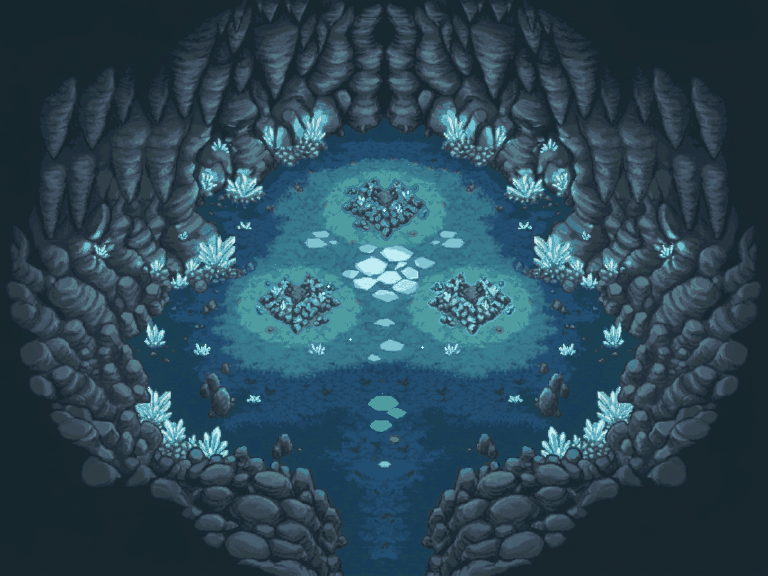
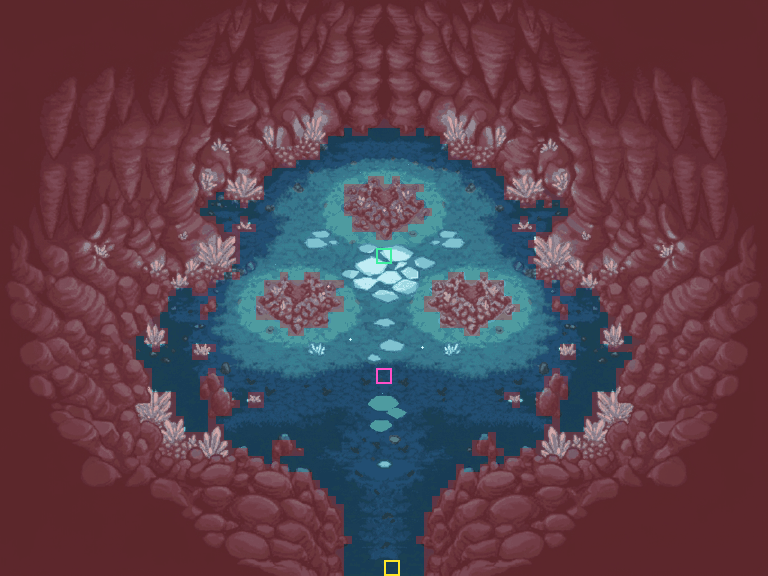
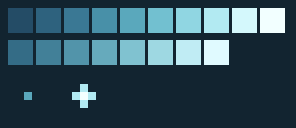

FTX1, 768×576)Fin de donjon référencée sur D16P31A (Crystal Lake, Explorers of Sky) : arrivée au sud (entrance), arène centrale de sable sarcelle et dalles lumineuses (boss), sanctuaire des trois massifs de cristal cyan au nord (objectif, aucune sortie).



{
"lot": "fin_traversee_cristalline_lac_v1",
"prefix": "FTX1",
"type_zone": "fin_de_donjon",
"format": "4:3 vaste",
"size_px": [
768,
576
],
"grid_8px": [
96,
72
],
"reference_da": {
"file": "D16P31A.png",
"sha256": "52c965e30130efc4a14f7f5bfb889343eb4fef14c307e4b55ab5390d92ee42c4",
"code_rom": "D16P31A",
"frames_rom": 29
},
"generation": [
{
"file": "decor.png",
"images": [
"source/fin_traversee_cristalline_lac_v1/reference/D16P31A.png"
],
"prompt": "Top-down 2D pixel-art crystal sanctuary boss room map (1200x896, wide 4:3) matching D16P31A (Crystal Lake): south entry pass between dark rock ledges; wide teal-lit sandy cavern arena with glowing cyan floor rune slabs and stratified rock boulders; 3 giant glowing cyan-blue crystal cluster mounds arranged in a triangle at the north-center surrounded by soft cyan floor halos; upper cavern rock walls embedded with glowing cyan crystal outcrops; closed north wall with no exit.",
"essais": "premier essai ; conforme"
},
{
"file": "sol_complet.png",
"images": [
"source/fin_traversee_cristalline_lac_v1/reference/D16P31A.png"
],
"prompt": "Teal-lit sandy cavern ground texture from D16P31A covering 100% of the canvas uniformly.",
"essais": "premier essai ; conforme"
}
],
"raw_inputs": [
{
"file": "source/fin_traversee_cristalline_lac_v1/bruts/decor.png",
"sha256": "a4bea45bdbad8ab126856dac5da2e876d6267d462bffb6e3c7d7f4c2d58524e3",
"size": [
1200,
896
]
},
{
"file": "source/fin_traversee_cristalline_lac_v1/bruts/sol_complet.png",
"sha256": "21a28c7dbb264b79262151d7f661a5b39e760519ec670806a8fc30c4393bf443",
"size": [
1200,
896
]
}
],
"segmentation_mesures": {
"cristaux_iliens": 3,
"dalles": 9,
"rochers": 10,
"cailloux": 94,
"cristaux_paroi_px": 53787
},
"fidelite_rip": {
"brut": {
"sable": {
"rip_rgb": [
46.4,
100.5,
128.8
],
"decor_rgb": [
47.8,
98.4,
123.6
],
"distance": 5.8
},
"roche": {
"rip_rgb": [
32.5,
48.3,
58.4
],
"decor_rgb": [
34.2,
50.2,
60.1
],
"distance": 3.0
},
"cristal": {
"rip_rgb": [
75.4,
153.2,
165.4
],
"decor_rgb": [
86.1,
160.1,
167.0
],
"distance": 12.9
},
"halo": {
"rip_rgb": [
82.9,
159.1,
166.2
],
"decor_rgb": [
85.0,
155.9,
162.6
],
"distance": 5.2
}
},
"calques_finaux": {
"sable:sable": {
"calque": "sable",
"matiere": "sable",
"rgb": [
49.7,
105.8,
129.8
],
"distance_rip": 6.4
},
"parois:roche": {
"calque": "parois",
"matiere": "roche",
"rgb": [
35.0,
50.5,
60.7
],
"distance_rip": 4.0
},
"cristaux_iliens:cristal": {
"calque": "cristaux_iliens",
"matiere": "cristal",
"rgb": [
90.6,
160.8,
168.9
],
"distance_rip": 17.3
},
"halos_sol:halo": {
"calque": "halos_sol",
"matiere": "halo",
"rgb": [
78.0,
155.0,
160.0
],
"distance_rip": 8.9
}
}
},
"layers": [
{
"file": "calques/FTX1_00_sol_complet.png",
"phases": 1,
"ticks": 60
},
{
"file": "calques/FTX1_01_sable.png",
"phases": 1,
"ticks": 60
},
{
"file": "calques/FTX1_02_ombres.png",
"phases": 1,
"ticks": 60
},
{
"file": "calques/FTX1_03_halos_sol.png",
"phases": 1,
"ticks": 60
},
{
"file": "calques/FTX1_04_dalles.png",
"phases": 1,
"ticks": 60
},
{
"file": "calques/FTX1_05_cailloux.png",
"phases": 1,
"ticks": 60
},
{
"file": "calques/FTX1_06_rochers.png",
"phases": 1,
"ticks": 60
},
{
"file": "calques/FTX1_07_cristaux_iliens.png",
"phases": 1,
"ticks": 60
},
{
"file": "calques/FTX1_08_cristaux_paroi.png",
"phases": 1,
"ticks": 60
},
{
"file": "calques/FTX1_09_rebords.png",
"phases": 1,
"ticks": 60
},
{
"file": "calques/FTX1_10_parois.png",
"phases": 1,
"ticks": 60
},
{
"file": "animation/lueur_dalles/FTX1_11_lueur_dalles_fNN.png",
"phases": 24,
"ticks": 5
},
{
"file": "animation/lueur_cristaux/FTX1_12_lueur_cristaux_fNN.png",
"phases": 24,
"ticks": 5
},
{
"file": "animation/scintillements/FTX1_13_scintillements_fNN.png",
"phases": 24,
"ticks": 5
}
],
"lueur_cristaux": {
"rampe": [
[
36,
76,
102
],
[
46,
98,
126
],
[
58,
120,
148
],
[
72,
144,
168
],
[
90,
168,
188
],
[
114,
192,
208
],
[
144,
214,
226
],
[
178,
234,
242
],
[
212,
248,
252
],
[
242,
255,
255
]
],
"facettes_px": 8918,
"phases": 24,
"frame_length_ticks": 5,
"dephasage_massifs": [
0,
8,
16
]
},
"lueur_dalles": {
"rampe": [
[
52,
108,
134
],
[
66,
128,
152
],
[
82,
148,
170
],
[
102,
170,
188
],
[
128,
194,
208
],
[
158,
216,
226
],
[
192,
236,
244
],
[
224,
250,
255
]
],
"dalles_px": 5717,
"phases": 24,
"frame_length_ticks": 5
},
"scintillements": {
"motes": [
[
360,
172,
0,
2
],
[
408,
170,
6,
2
],
[
384,
210,
12,
2
],
[
272,
268,
3,
3
],
[
330,
290,
9,
2
],
[
438,
288,
15,
2
],
[
496,
266,
21,
3
],
[
348,
344,
4,
2
],
[
420,
342,
16,
2
],
[
384,
396,
10,
2
]
],
"phases": 24,
"frame_length_ticks": 5
},
"scene_loop_ticks": 120,
"access": {
"entry_px": [
384,
560
],
"boss_px": [
376,
368
],
"goal_px": [
376,
248
],
"path_entry_to_boss_16x16": true,
"path_boss_to_goal_16x16": true,
"cells_explored": 298,
"blocked_cells": 5257,
"total_cells": 6912,
"walkable_cells": 1655
},
"pmdo": {
"target": "0.8.12",
"asset": "ftx1_fin_traversee_cristalline",
"namespace": "fin_traversee_cristalline_lac",
"tiles_per_bank": {
"FTX1_00_SOL": 6913,
"FTX1_01_SABLE": 509,
"FTX1_02_OMBRES": 1503,
"FTX1_03_HALOS": 864,
"FTX1_04_DALLES": 163,
"FTX1_05_CAILLOUX": 221,
"FTX1_06_ROCHERS": 113,
"FTX1_07_CRISTAUX": 225,
"FTX1_08_CRISTAUX": 686,
"FTX1_09_REBORDS": 1399,
"FTX1_10_PAROIS": 3452,
"FTX1_11_LUEUR": 746,
"FTX1_12_LUEUR": 1937,
"FTX1_13_SCINTILLEMENTS": 114
},
"banks": [
"FTX1_00_SOL",
"FTX1_01_SABLE",
"FTX1_02_OMBRES",
"FTX1_03_HALOS",
"FTX1_04_DALLES",
"FTX1_05_CAILLOUX",
"FTX1_06_ROCHERS",
"FTX1_07_CRISTAUX",
"FTX1_08_CRISTAUX",
"FTX1_09_REBORDS",
"FTX1_10_PAROIS",
"FTX1_11_LUEUR",
"FTX1_12_LUEUR",
"FTX1_13_SCINTILLEMENTS"
],
"runtime_tested": false,
"warp": "aucun"
},
"art_approved": false
}